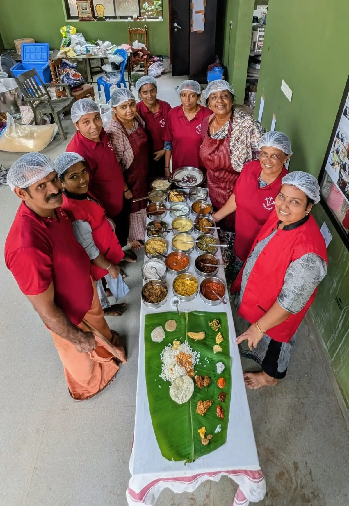
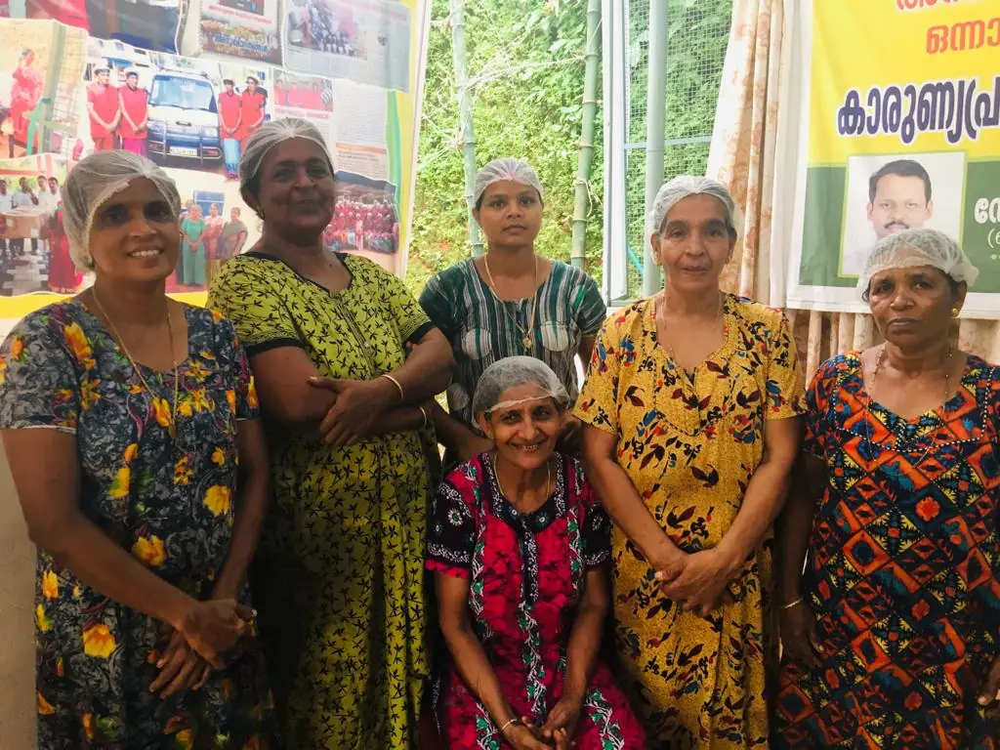

തുടക്കം ഒരു ഓണസദ്യയിൽ നിന്ന്.
പെരുമ്പളയിലെ വനിതകൾ നയിക്കുന്ന കുടുംബശ്രീ മിഷൻ യൂണിറ്റ്. ഓരോ ഊണിലും ഗുണമേന്മയും അളവും വീട്ടിലെ രുചിയും.
- 2018, പെരുമ്പളഓണസദ്യ
- പിന്നീട്ദിവസേനയുള്ള ടിഫിൻ
- പിന്നീട്വിവാഹങ്ങളും ചടങ്ങുകളും
- ഇന്ന്സർക്കാർ ഓഫീസുകൾ, ഉത്സവങ്ങൾ, ഔദ്യോഗിക പരിപാടികൾ
